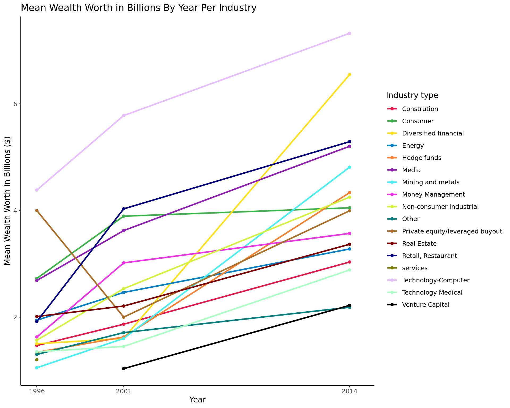

Wanna be rich? Here’s how!
A statistical analysis regarding which industry has the highest number of billionaires based on their continent
Introduction and data
Our topic focus on the dataset “Billionaires” (2016), which contains information on the Billionaires in the world in 1996, 2001, 2014. The dataset involves information on each billionaire such as their country, wealth worth, wealth type, industry, etc. Using some of these variables, we came up with a question that helps us gather more insight on the wealth world, which is helpful for those who are deciding which industry to enter in North America, and how that changes over time.
Research Question and Hypothesis:
- How has the relationship between wealth worth and industry among billionaires changed in North America as time goes on?
Based on our prior background knowledge, we predict that the number of billionaires involved in the industry of technology-computer will increase as time goes by because technology is an industry that is growing rapidly. We believe that the consumer industry may increase as well, and that the some of the more popular industries in 1996 might decrease in the number of billionaires as time passes. More broadly speaking, we hypothesize that the overall number of billionaires will increase, and therefore each industry will have a higher number of billionaires as time progresses, simply because there is more money in the world. We also predict that the average wealth worth will increase among all billionaires across all industries as time goes.
The data was from the CORGIS Dataset Project, collected by Ryan Whitcombwas in 1996, 2001, and 2014. [1] We are using data from all three years to see how the wealth industries have changed over time by comparing data about the wealth industries from each provided year. It compiled Forbes World’s Billionaires list and shows a record number of billionaires in the world while adding detailed information on the individuals listed. The relevant variables include the year, wealth worth, industry, and their continent. In total, the data set has 22 columns and 2614 observations. We are focusing our studies on the continent North America, to explore the relationship between billionaires and wealth worth in this area in particular over time.
To help us answer our research question, we looked at the Businesstech article, “The job sectors where billionaires make their money” presents findings from a study by UBS and PwC on the sectors where most billionaires succeeded. [2] The study analyzed the wealth of 2,000 billionaires worldwide and found that the top sectors where billionaires made their wealth are finance and investments, technology, manufacturing, real estate, and fashion and retail. Finance and investments had the most billionaires with 267, followed by technology with 221, manufacturing with 215, real estate with 163, and fashion and retail with 135. The study underscores the diversity of the sectors in which billionaires can generate wealth.
This article presents findings using billionaires from all over the world, whereas our research question is only exploring billionaires within North America. This will allow us to compare how the relationship between billionaires in North America and their industries differ from billionaires worldwide. Additionally, the article notes that technology is a top sector for billionaires to make most of their money, which reflects our hypothesis that technology will reflect the greatest increase in billionaires, as it is a sector that is growing rapidly.
Methodology
Our methodology involves multiple components. First, we found the number of billionaires per industry for each of the three years (1996, 2001, and 2014). Using this information, we can compare them and see how the number of billionaires has changed over time. Of course, this does not tell us anything about quantity of wealth, so in addition to the number of billionaires alone, we thought it would be beneficial to find the average wealth worth of the billionaires in each industry. We did this for all three years, and created a visualization to show how mean wealth worth has changed. From this, we can see the growth of certain industries as well as the diminish of others. Lastly, we conducted a hypothesis test for the general mean wealth worth, first for 2001 and 2014, and then for 1996 and 2001. These hypothesis tests tell us whether there was a true, significant change in mean wealth worth between those years. This is general, but could be done for the specific industries as well.
# A tibble: 17 × 2
wealth.how.industry num_billionaires
<chr> <int>
1 Consumer 86
2 Money Management 58
3 Retail, Restaurant 50
4 Media 42
5 Real Estate 42
6 Diversified financial 24
7 Technology-Computer 22
8 Constrution 16
9 Non-consumer industrial 16
10 Energy 15
11 Technology-Medical 14
12 Mining and metals 12
13 Hedge funds 9
14 Other 8
15 banking 1
16 Private equity/leveraged buyout 1
17 services 1# A tibble: 16 × 2
wealth.how.industry num_billionaires
<chr> <int>
1 Consumer 94
2 Media 73
3 Money Management 69
4 Retail, Restaurant 57
5 Technology-Computer 55
6 Real Estate 48
7 Energy 30
8 Constrution 20
9 Technology-Medical 19
10 Other 16
11 Hedge funds 15
12 Diversified financial 11
13 Mining and metals 10
14 Non-consumer industrial 8
15 Private equity/leveraged buyout 6
16 Venture Capital 3# A tibble: 16 × 2
wealth.how.industry num_billionaires
<chr> <int>
1 Consumer 291
2 Real Estate 190
3 Retail, Restaurant 174
4 Diversified financial 132
5 Technology-Computer 131
6 Money Management 122
7 Media 104
8 Energy 87
9 Non-consumer industrial 83
10 Technology-Medical 78
11 Mining and metals 68
12 Constrution 61
13 Other 59
14 Hedge funds 43
15 Private equity/leveraged buyout 18
16 Venture Capital 5Warning: Using `size` aesthetic for lines was deprecated in ggplot2 3.4.0.
ℹ Please use `linewidth` instead.
\(H_{0}= 2014-2001 \le 0\)
\(H_{a}= 2014 - 2001 > 0\)
The null hypothesis states that from 2001 to 2014, the average wealth worth has not changed.
The alternative hypothesis states that from 2001 to 2014, the average wealth worth has increased.
Results
From our visualizations and tests in the methodology section, we can draw conclusions that help answer our research question of how the relationship between wealth worth and industry among billionaires has changed in North America as time goes on.
We found that over the years, there has been a noticeable rise in the number of billionaires across most industries, along with a significant increase in their average wealth worth in billions. Among all industries, the technology computer industry has consistently shown the highest mean wealth worth over the three years. However, the greatest increase in mean wealth worth was observed in the diversified financial industry. It is also worth noting that the services industry was removed from the dataset in 2001, and this shows a decline in its overall success and profitability. On the other hand, the venture capital industry was added to the dataset in 2001, which shows its increase in overall success and profitability. Furthermore, the private equity/leveraged buyout industry experienced a dip in its graph (decrease in mean wealth worth), followed by an increase in later years.
Discussion
Summary:
From our research project, we learned that most industries grew due to the fact that both the number of billionaires within the industry increased as well as the mean wealth worth (not taking inflation into account though; will be discussed in next section). Changes in the dataset, such as the removal or addition of industries, can reflect broader trends in the overall success and profitability of certain sectors.
Limitations and future research:
Inflation: We did not consider the effects of inflation. Our model were based on the exact wealth worth in billion dollars in those years. We also anticipated that inflation can have a significant impact on wealth worth since 1996. We’d recommend future research does take in effect of inflation into account.
Heritage: Some billionaires in our data set were inherited from their parents. Therefore their data may not accurately reflect their industry type.
Data from 1996, 2001, and 2014 are not enough for a comprehensive analysis. In order to form a more precise and accurate model, we’d recommend to include more data from not just 3 years but every consecutive year from the beginning to the end so that a better trend can be presented.
Citation and Reference
[1] “Billionaires CSV File” from the CORGIS Dataset Project. By Ryan Whitcomb, Version 2.0.0, created on 5/17/2016.
[2] Businesstech. (2022, April 18). The job sectors where most billionaires make their money. Retrieved March 9, 2023, fromhttps://businesstech.co.za/news/business/576098/the-job-sectors-where-most-billionaires-make-their-money/